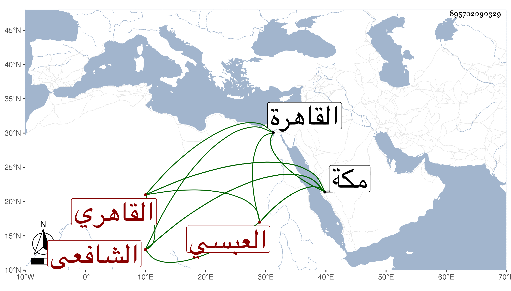

0902Sakhawi.DawLamic.ITO20230111-ara1.EIS1600.895702090329
Biography ID: 895702090329
1017
يحيى بن محمد بن سعيد بن فلاح بن عمر الشرف العبسي القاهري الشافعي ويعرف بالقباني حرفة جده وأما أبوه فكان من تجار الكارم . ممن يقرأ القرآن ويكثر تلاوته بل قيل أنه قرأ ربع المنهاج . ومات سنة إحدى وخمسين عن نحو ثلاث وستين ونشأ ابنه وكان مولده في جمادى الآخرة سنة سبع وعشرين وثمانمائة بالقاهرة فحفظ القرآن والعمدة والشاطبية والمنهاج وألفية النحو ، وعرض على جماعة منهم البساطي ولم يجز والمحب بن نصر الله الحنبلي وأجازه والشهاب بن المجدي والزين عبادة في آخرين منهم شيخنا بل قرأ عليه بعد الخصال المكفرة وسمع عليه بذل الماعون واليسير من فتح الباري وغير ذلك وتلا للسبع جمعا على الشهاب القلقيلي السكندري وقرأ عليه التيسير للداني وكذا تلا جمعا لربع القرآن على الزين رضوان وقرأ عليه أشياء ولبعضه على الشهاب أحمد الطلياوي وإلى المفلحون على ابن الحصري وقرأ عليه مسند الشافعي وعلى الشهاب العقبي وأخذ معظم السبع أيضا عن النور إمام الأزهر في آخرين واشتغل في الفقه والعربية وجملة من أصول الفقه وغيرها على الشمس الشنشي وأذن له في الإفتاء والتدريس وكذا أخذ اليسير من الفقه عن العلاء القلقشندي في تقسيم لم يتهيأ إكماله كان أحد القراء فيه وعن المناوي وقرأ جزء الجمعة على العلم البلقيني وعلى الزين طاهر في العربية وبعض القراآت وعلى ابن الهمام دروسا من تحريره وبعضها سماعا وعلى العز عبد السلام البغدادي قطعة من شرح ألفية العراقي بل سمع عليه عدة من دروسه وعلى شيخنا بعض الدروس في الشرح المذكور بقراءة ابن الصيرفي بل حضر بعض دروس القاياتي في الأشرفية وسمع على الجلال المحلي أماكن من تفسيره وقرأ على ابن الديري ، وطلب الحديث بنفسه وقتا وتردد لشيوخ الرواية سوى من تقدم كالرشيدي والصالحي والعز بن الفرات وسارة ابنة ابن جماعة وعبد الكافي ابن الذهبي وحج في سنة ست وخمسين ثم جاور سنة تسع وخمسين وأخذ بمكة عن أبي الفتح المراغي والتقي بن فهد وغيرهما كالشهاب الشوائطي وتلا عليه للسبع إلى المفلحون وبالمدينة عن ابن فرحون ، وحصل الكتب النفيسة والأجزاء واستملى على التقي القلقشندي لظنه معرفة ممليه وتزوج ابنة ابن الهمام بعد موت أبيها عقب فراق المناوي لها وقاسى منها شدة فما احتملها وصار يصرح بجنها ونحو ذلك فلم يلبث أن عرض له ما يقرب من الجنون وزاد وسواسه وصبه الماء وعدم وثوقه بكبير أحد ، وتضعضع حاله جدا بعد الثروة من التجارة وغيرها وباع أكثر ما كان حازه من كتب العلم سيما الحديث مما لم يكن يسمح برؤيته فضلا عن عاريته بل سمعت شيخنا الزين رضوان وهو يتألم من إبطائه بما يستعيره وربما دعا عليه ، واستمر في تناقص إلى أن رأيته بمكة في سنة أربع وتسعين بهيئة مزرية جدا وقد انهرم وانقطع جل وسواسه ، وكان قدومه بسبب مطالبة بارث قليل والتمس مني التكلم مع قاضيها في الإحسان إليه ففعلت وأكثر من الحضور عندي رواية ودراية بل قرأ هو بنفسه علي من شرح الألفية للناظم وكتب من شرحي لها يسيرا وكثر تعجبه مما لم ينهض لفهمه وربما تكلم بما لا يلاقي ما الكلام فيه هذا مع أنه نظم النخبة لشيخنا قديما وقرضه له جماعة منهم ابن الديري وأذن له بل كتبه عنه صاحبنا النجم بن فهد وصار في أثناء اجتماعه علي يقرأ علي منه ويسأل في تقرير ما وضعه عن غير تدبر ولا تفهم منه فكنت أقرره له وكتب منه بخطه نسخة للقاضي وعرضه على عبد المعطي وغيره فما لاق عند كثيرين ، وأعلمني بأنه جمع بشرى الأنام بسيرة خير الكرام وبغية السول في مدح الرسول والكواكب الضوية في مدح خير البرية والمجموع الحسن من الخلق الحسن وفتح المنعم على مسلم والابتهاج على المنهاج ولم يكملا والمنتقى من أبي داود ومن أحمد والمتباينات التي قال أنه أملى بعضها وعشاريات الصحابة وأصول قراءة أبي عمرو وغير ذلك ، وقد حدث باليسير سمع منه الطلبة بل قال لي أن سبط شيخنا سمع منه شيئا أورده في متبايناته ، وأما أنا فكتبت عنه في ربيع الأول سنة أربع وتسعين حين اجتماعه علي بمكة قوله :
| يا مريد الخير أخلص عملك | وتخلص من دنيء شغلك |
| وانو خيرا لامرئ ما قد نوى | إنما الأعمال بالنية لك |
| وافعل الخير فإن لم تستطع | كفت النية والأجر فلك |
وقوله :
| إن كنت تبغي في العلا للجنان | عليك يا صاح بحفظ اللسان |
| فهل وجوه الناس كبت سوى | حصائد الألسن من ذي لسان |
وبالجملة فنظمه ركيك وفهمه بطيء ولم يتميز ولا كاد بل هو جامد راكد .
